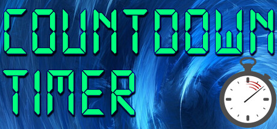
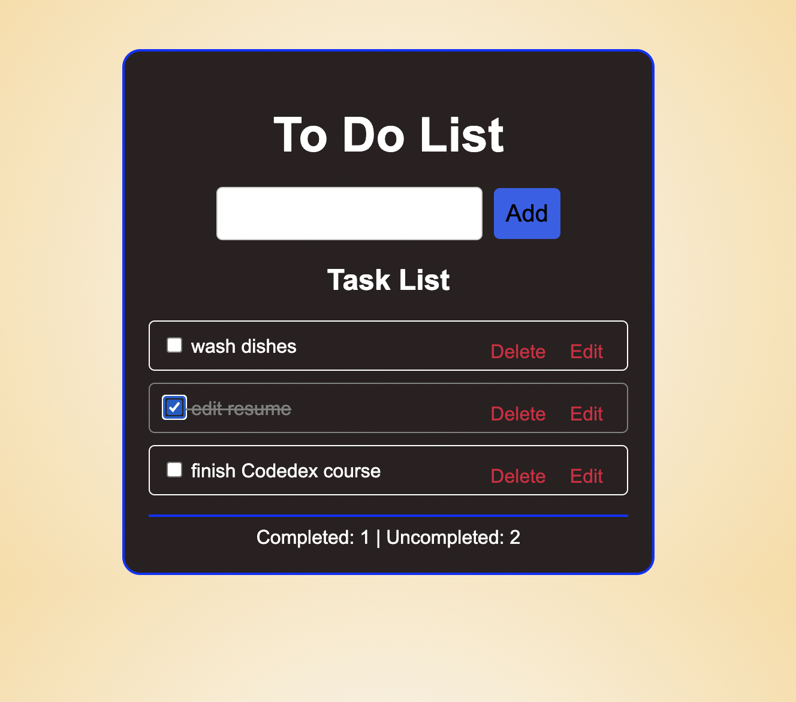

My Projects

This was a fun project I decided to do to practice my coding skills. I saw a video on TikTok and YouTube and challenged myself to recreate the game for fun!
View on GitHub
Project Two
Just like Project One, this was another personal challenge. I wanted to practice coding after watching more videos on YouTube, and I decided to build something useful!
View on GitHub
Project Three
Similar to the previous projects, I built this as part of my self-learning. It helped me gain more experience with coding and problem-solving!
View on GitHub
Project Four
This was a homework assignment at school. We were tasked with creating something, so I made a fun guessing game using my coding skills!
View on GitHub
Project Five
This was a school assignment I worked on with my trainer. Together, we created an e-commerce website for our project, combining web development skills with practical experience!
View on GitHub